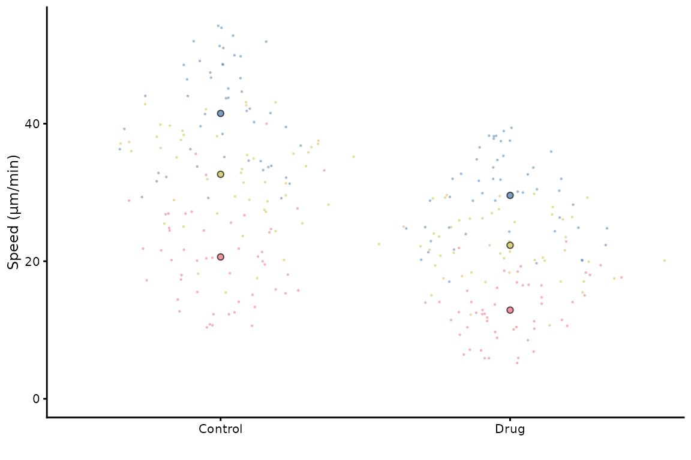
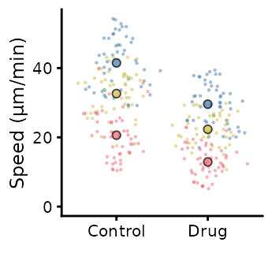
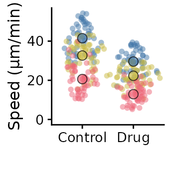
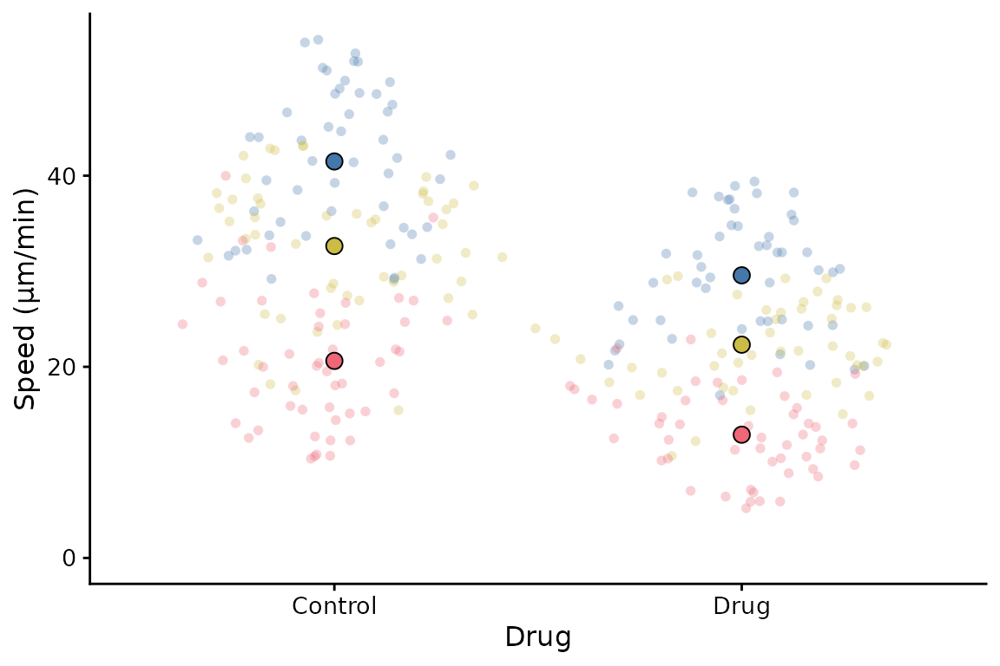
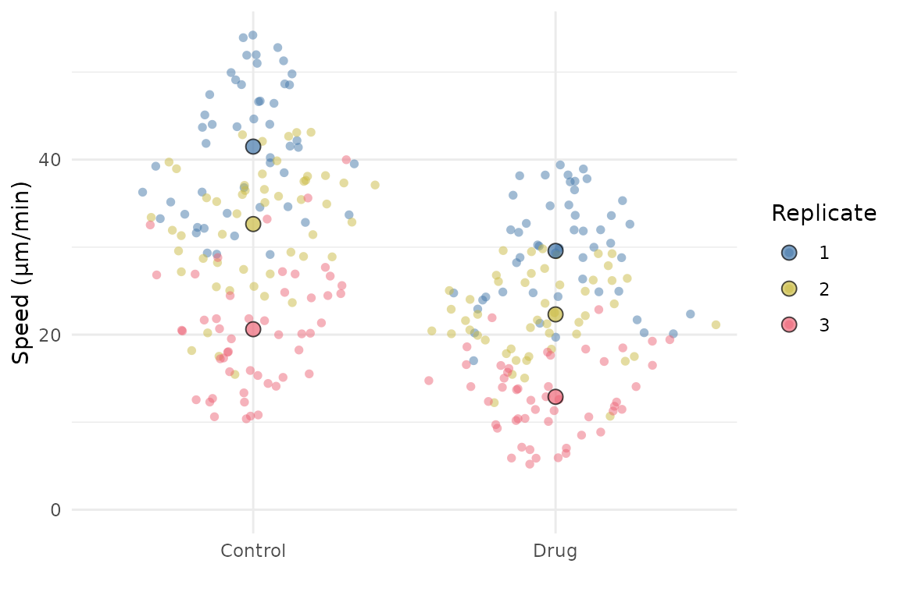
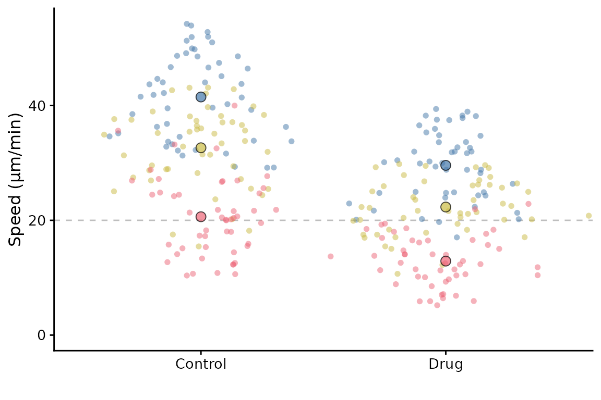
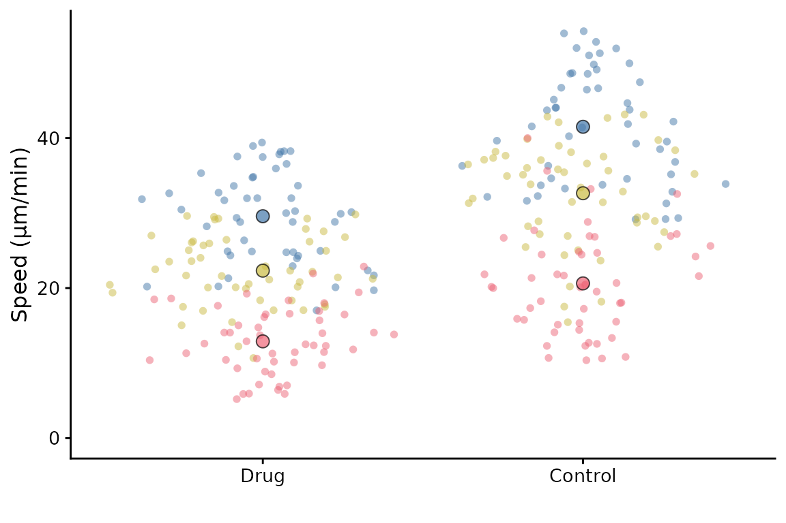

Advanced SuperPlots
In this vignette, we will explore some of the more advanced features of SuperPlotR.
But first, we need to deal with how to simply scale the plot so it looks good in your paper!
Sizing the SuperPlot
The default setting is to use point sizes of 2 for the data and 3 for the summary points. The font size is 12. This looks good in the RStudio viewer, but is not well suited to a figure which is likely to be very small.
library(SuperPlotR)
#> Error in get(paste0(generic, ".", class), envir = get_method_env()) :
#> object 'type_sum.accel' not found
# the default plot
superplot(lord_jcb, "Speed", "Treatment", "Replicate", ylab = "Speed (µm/min)")
# the same plot but with custom sizing
superplot(lord_jcb, "Speed", "Treatment", "Replicate", ylab = "Speed (µm/min)",
size = c(0.8,1.5), fsize = 9)
This does not look great in the viewer, but it will look better in a figure.
library(ggplot2)
# the same plot but with custom sizing
superplot(lord_jcb, "Speed", "Treatment", "Replicate",
ylab = "Speed (µm/min)", size = c(0.8,1.5), fsize = 9)
ggsave("plot.pdf", width = 88, height = 50, units = "mm") # final sizeThis is preferable to
library(ggplot2)
# the same plot but with custom sizing
superplot(lord_jcb, "Speed", "Treatment", "Replicate",
ylab = "Speed (µm/min)")
ggsave("plot.pdf", width = 88, height = 50, units = "mm") # final sizeCustomising the SuperPlot
A couple of simple tweaks: an x label can be added, and the transparency of points can be altered like this.
superplot(lord_jcb, "Speed", "Treatment", "Replicate",
xlab = "Drug", ylab = "Speed (µm/min)", alpha = c(0.3,1))
SuperPlotR returns a ggplot object which can be customised how you like. For example, the theme can be overridden like this:
p <- superplot(lord_jcb, "Speed", "Treatment", "Replicate", ylab = "Speed (µm/min)")
p + theme_minimal()
It can also accept a ggplot object using the gg
parameter, and then add a SuperPlot to it (within reason!). For example,
you might want to plot something behind the SuperPlot.
p <- ggplot() +
geom_hline(yintercept = 20, linetype = "dashed", col = "grey")
superplot(lord_jcb, "Speed", "Treatment", "Replicate", ylab = "Speed (µm/min)", gg = p)
Ordering the x-axis
This is best done by reordering the levels of the factor in the input
dataframe before calling superplot.
df <- lord_jcb
df$Treatment <- factor(df$Treatment, levels = c("Drug", "Control"))
superplot(df, "Speed", "Treatment", "Replicate", ylab = "Speed (µm/min)")
It is also possible to reorder the Replicates using a similar
strategy. You might want to do this so that the order of colours and
shapes matches a different order to the default. Another way to achieve
the same thing is to supply a reordered colour palette to
superplot.